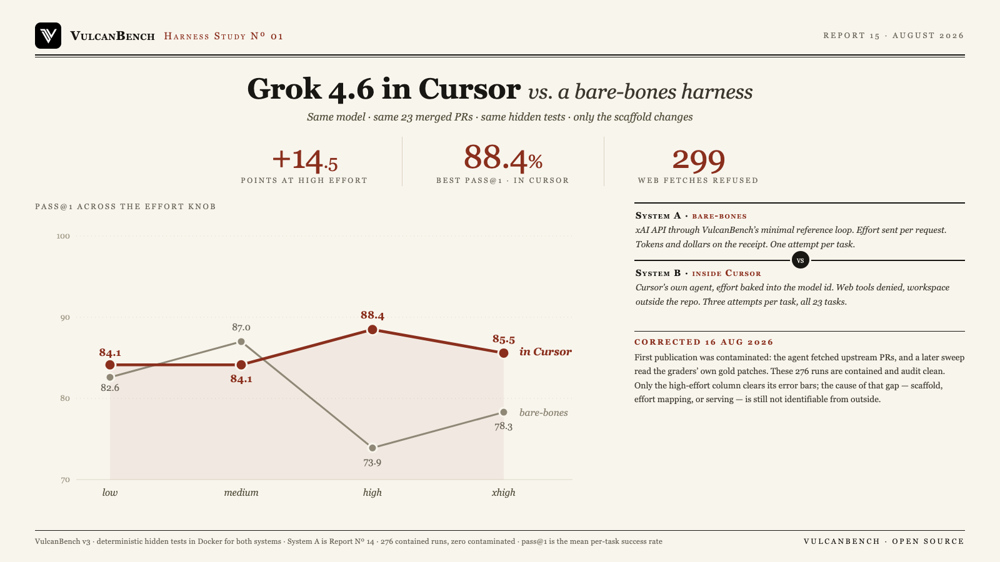

Cursor is worth 14.5 points at high effort. At every other level the two systems land within noise of each other. At the high setting, Grok 4.6 scores 88.4% inside Cursor and 73.9% through VulcanBench’s minimal reference loop, and that is the only level where the gap is larger than the error bars. Low is +1.5, xhigh +7.2, and at medium the reference loop is ahead by 2.9. The clearest difference is what happens above medium: the raw API drops from 87.0% to 73.9% as effort rises to high, while the same step inside Cursor goes up, from 84.1% to 88.4%. The agent also tried to reach the web 299 times across the 276 runs, more often at higher effort, and was refused every time.

| Effort | In Cursor | Bare-bones API | Delta | Cursor time/task | API time/task |
|---|---|---|---|---|---|
| low | 84.1% ±7.5 | 82.6% ±8.1 | +1.5 | 3.5 min | 4.8 min |
| medium | 84.1% ±7.2 | 87.0% ±7.2 | −2.9 | 4.6 min | 14.2 min |
| high | 88.4% ±6.5 | 73.9% ±9.4 | +14.5 | 6.9 min | 16.3 min |
| xhigh | 85.5% ±7.2 | 78.3% ±8.8 | +7.2 | 6.5 min | 15.8 min |
System A (bare-bones) is Report No. 14: the xAI API through
VulcanBench’s minimal reference loop, one attempt per task, effort sent per request. System B is Cursor’s own agent
via cursor-agent, three attempts per task (69 runs per level, 23/23 tasks), effort baked into the model id
(cursor-grok-4.6-low … -xhigh), non-fast ids, web tools denied and workspace outside the
repository. Both systems are graded by the same deterministic hidden tests in Docker. pass@1 is the mean per-task success rate;
times are medians and include provider latency. Only the high-effort gap exceeds the combined uncertainty of its pair.
The advantage is one level wide. Only the high setting produces a gap bigger than its error bars. Across the whole knob the two systems average about four points apart, and the delta changes sign at medium. Any single “Cursor advantage” number is really a choice of effort level.
Cursor prevents the high-effort collapse. Report No. 14 found the raw API falling from 87.0% at medium to 73.9% at high. Inside Cursor the same step rises, 84.1% to 88.4%. The scaffold helps at the setting where the model tends to overwork a problem, and only there.
The effort knob barely matters inside Cursor. 84.1, 84.1, 88.4, 85.5 is a 4.3-point spread, against 13.1 through the raw API. Which harness you use matters more than which effort you pick.
Higher effort means more web attempts. Refused fetch attempts climb from 29 at low to 66, 96, and then 108 at xhigh, 299 in total, every one denied. A benchmark that allowed browsing would flatter the high-effort settings most. Every figure here comes from runs where no fetch went through.
The stubborn tasks differ by system. sqlglot-canonicalize-internal-names is never solved by either system at any setting. itertools-strip-prefix goes the other way: every raw-API level solves it, and every Cursor attempt fails.
| Effort | Solved every attempt | Mixed | Never solved |
|---|---|---|---|
| low | 19/23 | 2 | 2 |
| medium | 18/23 | 3 | 2 |
| high | 20/23 | 1 | 2 |
| xhigh | 19/23 | 2 | 2 |
Three attempts per task per level. The same two tasks go unsolved at every level: itertools-strip-prefix and sqlglot-canonicalize-internal-names.
The high-effort gap could come from Cursor’s scaffold (context management, tool design, stopping rules), from how Cursor’s effort-suffixed model ids map to the API’s reasoning_effort values, or from different serving. “Cursor Grok 4.6” is Cursor’s own branding and may be a tuned or differently-hosted deployment. These are indistinguishable from outside, and per-request token counts, which Cursor does not report, would settle it.
On the measurement side: attempt counts differ between systems (3 vs 1), so per-task flips carry more weight on the Cursor side. Bare-bones costs in Report No. 14 are lower bounds: xAI reports reasoning tokens outside completion_tokens and the harness under-counted them during that sweep (since fixed). The xhigh column was collected in two sessions days apart after promotional credits ran out mid-level; every other level ran in one continuous pass. The integrity audit certifies that no run reached the web or the benchmark’s own files; it cannot certify what was in the model’s training data.
VulcanBench v3: 23 tasks from real merged post-cutoff PRs (Python 9, TypeScript 4, Rust 4, Go 3, JavaScript 3). Both systems are graded by the same deterministic hidden tests in Docker; model judges disabled. System A ran 2026-08-12 (Report No. 14). System B ran 2026-08-15/16 with cursor-agent 2026.08, non-fast model ids, Cursor’s sandbox enabled, web tools denied through a workspace permissions file, and an agent workspace created outside the repository so that no task definition, gold patch, or hidden test exists above the agent’s working directory; VulcanBench setup and verification run in Docker over that workspace. Every run carries an integrity audit of both leak channels and all 276 are clean. This is the first VulcanBench study to hold the model fixed and vary the harness; the Harness Study series continues with other model × harness combinations. The next one, Report No. 16, adds a third system: the same model inside xAI’s own Grok Build CLI, where the effort knob rises at every step and reaches 92.8%.
{kind=link}